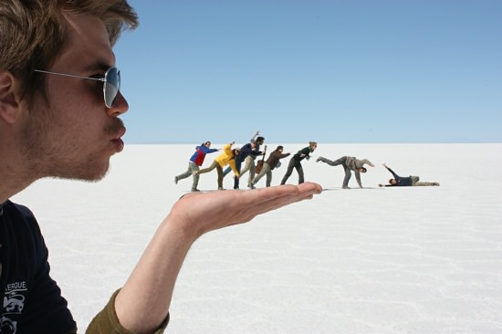
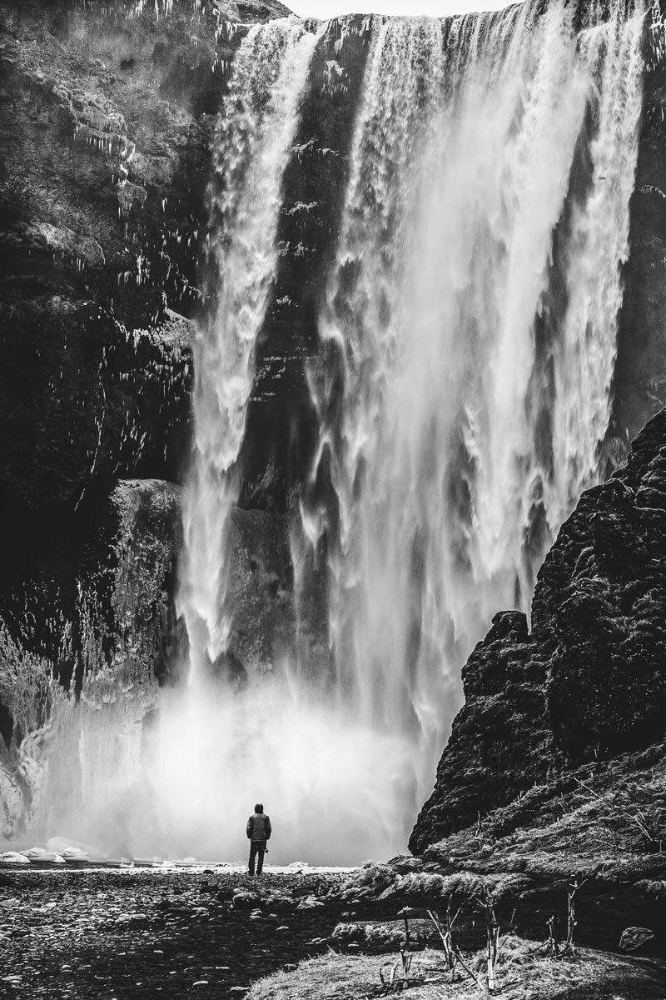
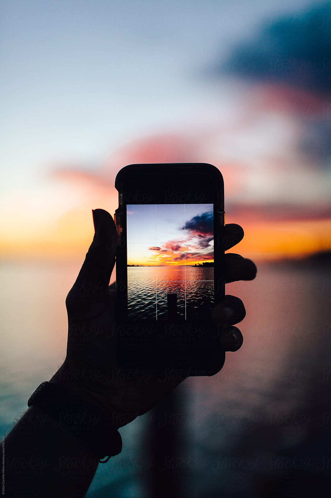

photography has the peculiar capacity to turn all subjects into works of art
photographers are to make an assault on reality
photographic evangel - those advocating that photography is a form of art
Anyone can take a photo, so "the very success of photojournalism lies in the difficulty of distinguishing one superior photographer's work from another."
Sontag believes that photography is not, itself, an art form, but rather something to create art.
Ansel Adams "urges that we stop saying that we “take” a picture and always say we “make” one."
Robert Frank thinks "there is one thing the photograph must contain, the humanity of the moment."
For Baudelaire, photography was painting’s “mortal enemy”; but eventually a truce was worked out, according to which photography was held to be painting’s liberator.
some think monochrome photos are "felt to be more tactful, more decorous than color"
evangelist - an enthusiastic advocate
Museums simultaneously present many styles of photos as a collection, however, some professionals feel that the unlimited variety "reduces photography to something trivial, vulgar, a mere craft."


museum's naturalization of photography as art is the conclusive victory